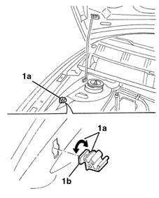
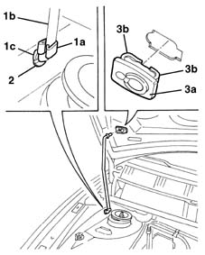

7025A58 device for holding bonnet lid open - r+r
- Path
- Procedures > 70 FITTINGS > 7025 COMPARTMENT LIDS > 7025A bonnet lid > 7025A58 device for holding bonnet lid open - r+r
- Kind
- repair procedure (removal / refitting; the operation number is the code)
- Applies to
- all engines; all production periods
- Interactive page
- https://sloeber94.github.io/elrnDB-lYpsln/en/#/2429547
Applies to: all engines; all production periods
 Removing
Removing
 Refitting
RefittingOpen the bonnet lid.
1. Rotate the support (1a) through 90 to release the retainer (1b), then extract it.

Applies to: all engines; all production periods
1. Support the bonnet lid, then release the retainer (1a) from the strut (1b) and extract the actual strut from the housing (1c).
2. Extract the retainer from the housing in the bodyshel.
3. Extract the support (3a) after having released the retainers (3 b).

Applies to: all engines; all production periods
Refitting
RemovingCheck that the support device is not damaged.
Position the support and attach the retainers.
Place the retainer in position and fit the strut fastening the retainer.
Fit the support and rotate it into the correct position attaching the retainer.